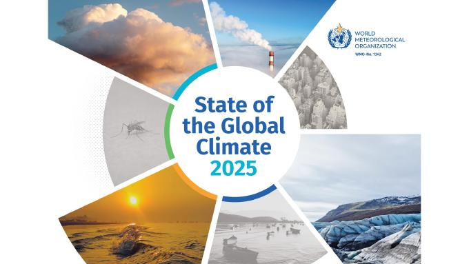

Evidencias del cambio climático
¿Está subiendo el nivel del mar?
Sí. Según la OMM, el nivel medio global del mar subió unos 11 cm entre 1993 y 2025.
Al calentarse, el agua del océano se expande. El deshielo de glaciares y capas de hielo terrestres añade agua al mar. En una costa concreta, el cambio también depende de factores locales, como el hundimiento o la elevación del terreno.
Evidencia y límites
Diferencia acumulada aproximada en cm, 1993–2025. No es una tasa en mm/año ni un umbral de seguridad. Hay variabilidad interanual; el aumento no es constante cada año.
Datos: 1993–2025. Publicación: 23/03/2026.
Revisión indicada en la versión anterior: 11/11/2026.
Los gráficos externos pueden actualizarse por su cuenta. Si guardas la página, podrás leer el resumen sin conexión. El visor y los enlaces a las fuentes requieren internet.
Evolución histórica (1880–2020)
¿Cómo ha cambiado el nivel medio global desde finales del siglo XIX? El visor de OWID combina series de Church y White y de la Universidad de Hawái, a partir de NOAA Climate.gov. El eje vertical muestra el cambio en milímetros respecto a la media de 1993–2008.
Si el visor no se muestra, puedes abrirlo desde el enlace inferior.
Registro satelital (1993–2025)
¿Cuánto ha subido el nivel medio global desde que se mide por satélite? La figura de la OMM usa datos de AVISO/CNES y expresa el cambio desde 1993 en milímetros.
El cero de esta figura corresponde al inicio del registro. El visor histórico toma como cero la media de 1993–2008. Para comparar valores entre ambos recursos habría que usar una referencia común.

Fuente: Our World in Data